Cerca de 3,2 milhões de pessoas fizeram as provas de Matemática e Ciências da Natureza no domingo. A abstenção subiu de 32% no 1º dia para 36% no 2º; em 2025, foi de 30%. Pág. 2.
Na Asean, Lula defendeu um mundo multipolar e criticou tarifas e vetos. Com o premiê de Singapura, combinou retomar a análise de um acordo entre Mercosul e Asean. Pág. 2.
Drones contra o Bahrein e petroleiros em minas perto de Ormuz. Pág. 5.
🏆 Beira-Rio com 20.097 pessoas vê o Inter vencer e ficar com a taça. Pág. 15.
💰 Bastter, renda fixa e antigolpe (20–21) · 😂 Tirinhas (22–23) · 📜 Arcanos (24–25) · 🏛️ Honra (26–27) · ⚖️ Equilíbrio (28–29).
Enem. O 2º dia, no domingo, teve abstenção de 36%, a maior desde 2020; no 1º dia, em 8/11, faltaram 32%. Em 2025, o 2º dia teve 30% de ausentes. Cerca de 3,2 milhões de pessoas fizeram a prova e 1.683 foram eliminadas. O ministro da Educação, Leonardo Barchini, atribuiu a alta à inscrição automática, que incluiu estudantes que não escolheram fazer o exame.
Próximos passos. Quem faltou por problema de saúde ou logístico pode pedir reaplicação de 16 a 20/11. O edital prevê o gabarito oficial em até 10 dias úteis, ou seja, até 30/11; uma fonte cita a quarta (18), sem confirmação do Inep. As notas saem em janeiro de 2027.
Asean. No domingo, Lula discursou na cúpula em Manila e defendeu que o Brasil passe a parceiro de diálogo pleno. Disse que "cidadãos do Sul Global pagam o preço por tarifas injustas e vetos irresponsáveis" e defendeu um mundo multipolar. O comércio com o bloco soma US$ 38,4 bilhões por ano, o 5º maior parceiro do país.
Singapura. Na bilateral com o premiê Lawrence Wong, os dois decidiram retomar a análise de um acordo entre Mercosul e Asean e falaram de investimentos singapurianos em energia. Singapura preside a Asean em 2027.
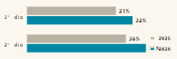
| 16–20/11 | Pedido de reaplicação |
| Até 30/11 | Gabarito oficial (edital) |
| 15–16/12 | Reaplicação |
| Jan/2027 | Notas |
Cúpula do Mercosul em Montevidéu, em 4/12, e encontro do G20 nos EUA, em 14 e 15/12, sem bilateral com Trump prevista até agora.
O jornal não toma partido. Publica fatos, números oficiais e declarações atribuídas, com o mesmo tratamento a todos os lados.
Sobral. Um casal de 18 e 30 anos, suspeito de integrar uma facção de origem paulista, foi preso em flagrante no sábado (14). A ação reuniu a Polícia Militar e a Coordenadoria de Inteligência da SSPDS e apreendeu um fuzil, duas pistolas, um colete balístico, mais de mil munições e quase 35 kg de drogas. Os dois foram levados à 1ª Delegacia de Polícia Civil de Sobral.
Tempo. A previsão para esta segunda indica possibilidade de chuva em diferentes períodos do dia, com pancadas isoladas; os serviços meteorológicos divergem sobre a intensidade.
Fortaleza. O Leão enfrenta o Criciúma nos playoffs de acesso: ida no sábado (21) e volta em 28/11, em casa, com vantagem do empate no agregado. O Ceará fica na Série B.
Dislexia. A Lei estadual 16.242, de 2017, criou a Semana de Conscientização sobre Dislexia e Transtornos de Aprendizagem no Ceará. Pág. 7.
Contexto Voos. A Gol deixa de voar de Fortaleza para Orlando, Montevidéu, Buenos Aires, Foz do Iguaçu e Manaus a partir de fevereiro de 2027; Miami fica só em dezembro e janeiro.
| Sáb 21 | Criciúma × Fortaleza (ida) |
| Sáb 28 | Fortaleza × Criciúma (volta) |
Horários a confirmar pela CBF.
O estado fez quase um terço dos transplantes do Nordeste em 2024. O Hospital Universitário Walter Cantídio, da UFC, chegou a 2.000 transplantes renais. Mais na p.24.
Informação sobre crime vem da polícia e de fontes oficiais. Não repasse vídeo ou nome de suspeito em grupo de mensagens: atrapalha a investigação.
Japão. O PIB ficou estável no trimestre (0,0%), contra alta de 0,1% esperada; em ritmo anual, recuou 0,1%, quando o mercado previa +0,3%. É a primeira contração em um ano. O 2º trimestre foi revisado para +1,7% anualizado. O consumo das famílias caiu 0,3%; o investimento das empresas subiu 1,6%.
Brasil. O Banco Central publica o Focus às 8h25 e o IBC-Br de setembro às 9h; em agosto, o índice subiu cerca de 0,3%. À tarde sai a balança comercial parcial.
Petróleo. O fim de semana teve ataque do Irã ao Bahrein e relatos de petroleiros atingidos por minas perto de Ormuz. Na semana de 9/11, o Brent recuara para perto de US$ 95, após a maior queda semanal desde 2020. Pág. 5.
A semana. Terça: varejo nos EUA e balanço da Nvidia, o primeiro sob a CEO interina Colette Kress, com receita projetada de US$ 108 bilhões. Quarta: ata do Fed e preço da Anthropic. Quinta: estreia da Anthropic na Nasdaq. Sexta: feriado no Brasil.
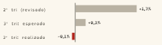
Semana de notícia grande pede zero decisão por impulso: guerra, balanço e estreia de ação mexem com preços por horas, não com o seu plano. Anote dúvidas e decida no fim de semana. Isto não é recomendação de investimento.
| Seg | Focus · IBC-Br |
| Ter | Varejo EUA · Nvidia |
| Qua | Ata do Fed · preço da Anthropic |
| Qui | Anthropic na Nasdaq · Shenzhen |
| Sex | Feriado no Brasil |
É o ritmo do trimestre projetado para um ano inteiro. Por isso um trimestre "parado" (0,0%) pode virar −0,1% anualizado com o arredondamento.
Dois trimestres seguidos de queda. O Japão ainda não está nela: o 2º trimestre cresceu.
Bahrein. A Guarda Revolucionária disse ter lançado seis drones contra uma base de helicópteros, a de Riffa, em retaliação a "ações hostis" dos EUA. O Bahrein informou que interceptou e destruiu as munições. A Marinha da Guarda Revolucionária relatou que dois petroleiros bateram em minas e pegaram fogo ao sul do estreito de Ormuz.
EUA. O porta-aviões Theodore Roosevelt chegou ao Oriente Médio e se junta ao George H. W. Bush e ao George Washington. Segundo a Reuters, Trump disse a assessores que pode evitar novos ataques se não houver provocação do Irã ou dos houthis. O Wall Street Journal relata que a inteligência americana estima até 2.500 mísseis ainda nas mãos de Teerã.
Ucrânia. Zelensky disse que 55% da capacidade de refino russa está fora de operação. Kiev atingiu petroquímicas no Tartaristão e uma fábrica de helicópteros em Briansk. A Rússia lançou 132 drones na noite de sábado; 106 foram abatidos ou neutralizados. Na semana, foram mais de 2.300 drones, 1.590 bombas guiadas e 15 mísseis, segundo Kiev.
| Seg 16 | Trump deixa Washington |
| Ter 17 | Trump na Asean, em Manila |
| 18–19 | APEC em Shenzhen |
| Qui 19 | Trump-Xi e Trump-Xi-Putin |
O Bahrein é um arquipélago ligado à Arábia Saudita por uma ponte de cerca de 25 km e sedia a 5ª Frota americana. Por Ormuz costuma passar um quinto do petróleo do mundo.
Houthis: grupo armado do Iêmen aliado do Irã. Mina naval: explosivo deixado na água que detona com a passagem do navio. APEC: fórum de 21 economias do Pacífico.
Ataque e interceptação vêm de lados opostos. Guarde quem afirma, quando e com que prova, e espere confirmação independente.
Respostas: Venera 3 · UNESCO · aglomerado M13, em Hércules.
Dia Internacional da Tolerância · Dia Nacional de Atenção à Dislexia · Dia do Policial Federal · Dia Nacional da Amazônia Azul.
A SARS de 2002 apresentou ao mundo um coronavírus capaz de causar epidemia, 17 anos antes da covid-19.
Em Cajamarca, Atahualpa pagou resgate em ouro e prata e foi executado em 1533. A conquista começou com um encontro que virou emboscada.
Dislexia. É um transtorno do neurodesenvolvimento que dificulta ligar sons a letras e afeta leitura, escrita e soletração, em graus leve, moderado ou grave. O diagnóstico é de exclusão e feito por equipe: médico, psicólogo, fonoaudiólogo, psicopedagogo e neurologista. Aparece com inteligência normal ou alta. A Lei 13.085/2015 criou a data para eventos que difundam informação e mostrem a importância de diagnosticar e tratar cedo.
E o TDAH? Os dois andam juntos com frequência: em estudos clássicos, de um quarto a 40% de quem tem um dos diagnósticos também tem o outro. Avaliar só um deixa parte do problema sem tratamento.
Mpox no Rio. A Secretaria de Saúde do estado contava 382 casos em 2026 até sexta (13): 124 até 12 de setembro e 258 depois disso. Pelo menos 55 pessoas foram internadas; a idade média é 33,8 anos e a capital concentra 71,2% dos registros. A única morte do ano no país, já contada nos boletins, foi na capital. O SUS vacina hoje pessoas de 18 a 49 anos com HIV e imunidade baixa e profissionais de laboratório.
Contexto Herpes-zóster. Projeto que inclui a vacina no SUS para maiores de 50 anos e imunossuprimidos passou pela comissão de Assuntos Sociais do Senado em setembro e segue em tramitação. A Conitec rejeitou a incorporação neste ano por custo.
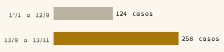
✅ Dislexia tem base neurobiológica e melhora com intervenção precoce. 🟡 A fonte OpenDyslexic, usada nesta edição, não aumentou a velocidade nem a precisão da leitura num estudo controlado com alunos disléxicos; o conforto é pessoal, e você pode pedir outra fonte. 🔴 "Dislexia é preguiça ou falta de inteligência" é mito.
| Etapa | O que fazer | ⚠️ Pegadinha de prova |
|---|---|---|
| 1. Alvo | PAM inicial de 65 mmHg, com reavaliação de perfusão: tempo de enchimento capilar, lactato, diurese e consciência. | PAM de 80–85 para todos não reduz mortalidade (SEPSISPAM). |
| 2. 1ª droga | Noradrenalina. Se o acesso central atrasa, comece por veia periférica calibrosa e vigie extravasamento. | Não espere o cateter central nem "terminar o volume" para iniciar. |
| 3. 2ª droga | Vasopressina 0,03 U/min, em vez de escalar a noradrenalina, em geral quando ela passa de 0,25–0,5 µg/kg/min. | Vasopressina não se titula como a noradrenalina: é dose fixa. |
| 4. Se ainda falta | Adrenalina se a PAM segue baixa. Disfunção cardíaca com hipoperfusão apesar de volume e PAM: dobutamina ou adrenalina. | Dopamina não é 1ª linha: no SOAP II, arritmias em 24,1% × 12,4%. |
| 5. Corticoide | Hidrocortisona 200 mg/dia (50 mg de 6/6 h) se noradrenalina ou adrenalina ≥ 0,25 µg/kg/min por pelo menos 4 h. | Não precisa dosar cortisol nem fazer teste do ACTH antes. Gancho com a p.9. |
Conteúdo educativo. Siga o protocolo institucional.
Homem de 64 anos, pneumonia, recebeu 30 mL/kg de cristaloide. Noradrenalina a 0,3 µg/kg/min por acesso periférico, PAM 58, lactato 4,8, enchimento capilar de 5 s.
Conduta: associe vasopressina 0,03 U/min, passe acesso central, inicie hidrocortisona 50 mg de 6/6 h e faça POCUS do VE (p.10). Função ruim com hipoperfusão: dobutamina. Reveja foco e antibiótico.
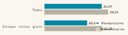
Opção de exceção no choque vasoplégico refratário: no ATHOS-3, a PAM respondeu em 69,9% × 23,4% com placebo, sem ganho de sobrevida comprovado.
Veia calibrosa, acima do punho, checagem frequente do local e plano para o cateter central. Extravasou: pare e siga o protocolo.
| Passo | O que fazer | ⚠️ Pegadinha de prova |
|---|---|---|
| 1. Suspeitar | Hipotensão desproporcional ou refratária, vômitos, dor abdominal, hiponatremia, hipoglicemia, eosinofilia. Gatilhos: infecção, cirurgia, corticoide suspenso. | A dor abdominal pode imitar abdome agudo. |
| 2. Tratar já | Hidrocortisona 100 mg IV em bolus, depois 200 mg/24 h (contínua ou 50 mg de 6/6 h). 1 L de soro na 1ª hora; glicose se hipoglicemia. Colha cortisol e ACTH antes, se não atrasar. | Nunca espere o cortisol para tratar. |
| 3. Confirmar | Depois de estável: cortisol matinal < 5 µg/dL sugere; teste com cosintropina 250 µg com pico < 18 µg/dL (500 nmol/L) confirma. | Ensaios novos usam cortes menores: confira o do seu laboratório. |
| 4. Classificar | Primária: ACTH alto, escurecimento da pele, hipercalemia; manutenção com fludrocortisona. Secundária ou por corticoide: ACTH baixo ou normal, potássio normal. | Hipercalemia aponta para adrenal; a aldosterona é preservada na secundária. |
| 5. Prevenir | Manutenção com hidrocortisona 15–25 mg/dia em 2–3 tomadas. Regra do dia de doença: dobrar ou triplicar na febre; injeção se vomitar. Cartão de alerta. | Hidrocortisona acima de 50 mg/dia já cobre o efeito mineralocorticoide. |
Conteúdo educativo. Siga o protocolo institucional.
Mulher de 45 anos com lúpus, prednisona 20 mg/dia há 6 meses, sem o remédio há 5 dias. Vômitos, PA 78/40, sódio 129, potássio 4,1, glicemia 58.
Conduta: crise adrenal por suspensão do corticoide (potássio normal porque a aldosterona funciona). Hidrocortisona 100 mg IV agora, soro com glicose, depois 200 mg/24 h; procure gatilho e programe desmame lento.
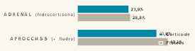
Olhe em paraesternal longo, eixo curto e apical 4 câmaras e classifique: hiperdinâmico, normal, reduzido ou muito reduzido. Paredes que quase se tocam na sístole sugerem falta de volume ou vasoplegia. No paraesternal longo, o EPSS (distância entre o folheto anterior da mitral e o septo) acima de 7 mm sugere fração de ejeção reduzida.
⚠️ Pegadinha: estenose mitral e insuficiência aórtica alteram o EPSS; a estimativa visual é qualitativa e não substitui o eco formal.
FA: ritmo irregularmente irregular, sem onda P, linha de base tremida. Flutter típico: ondas F em dente de serra, negativas em DII, DIII e aVF, a cerca de 300/min; com condução 2:1, a frequência fica regular perto de 150 bpm.
⚠️ Pegadinha: taquicardia regular a 150 sem P clara é flutter 2:1 até prova em contrário. Manobra vagal ou adenosina revelam as ondas F, mas não revertem o flutter. A anticoagulação segue a lógica da FA.
Em volume controlado com fluxo constante e pausa inspiratória de 0,5 s: complacência estática = VC ÷ (platô − PEEP); resistência = (pico − platô) ÷ fluxo. Exemplo: VC 420 mL, platô 26 e PEEP 10 dão 26 mL/cmH₂O, típico de SDRA. Pico sobe e platô não: via aérea (broncoespasmo, secreção, tubo dobrado ou mordido). Pico e platô sobem juntos: pulmão ou tórax (SDRA, pneumotórax, intubação seletiva, abdome distendido).
Paredes do VE quase se tocam? Pense em volume ou vasoplegia.
Regular a 150 sem P? Flutter 2:1 até prova em contrário.
Pico sobe, platô não? Problema de via aérea ou tubo.
Anthropic. A procura chegou a cerca de duas vezes o lote no 1º dia de apresentações a investidores e a seis vezes na quinta (12), segundo Reuters e Bloomberg. O Financial Times relatou que os bancos esperam fixar o preço acima da faixa de US$ 70 a US$ 78. A oferta é de 825 milhões de ações com o código ANT, e os coordenadores podem vender mais 123,75 milhões. Google e Nvidia compram US$ 10 bilhões cada na colocação privada de US$ 26 bilhões. Pelo prospecto, os fundadores mantêm ações com 50,1% dos votos, e um fundo de benefício de longo prazo elege a maioria do conselho.
Nvidia. O balanço do 3º trimestre fiscal sai na terça (17), após o fechamento, o primeiro sob a CEO interina Colette Kress. A empresa projetou receita de US$ 108 bilhões.
Supercomputadores. A conferência SC26, em Nova Orleans, vai até sexta e costuma trazer a nova lista TOP500. Desde junho lidera o chinês LineShine, de Shenzhen, com 2,198 exaflops só em CPUs e 42,2 MW de consumo.
Contexto Apple. O iOS 27.3, com os primeiros recursos de IA da Apple na China, deve sair em meados de dezembro.
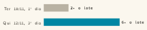
| 10/11 | Faixa de US$ 70–78 |
| Qua 18 | Preço final (previsto) |
| Qui 19 | Estreia na Nasdaq (prevista) |
Os pedidos somam seis vezes as ações à venda. Não diz o preço final nem como a ação vai se comportar depois da estreia.
Megaofertas costumam oscilar muito nas primeiras semanas. Regra das 72 h. Isto não é recomendação de investimento.
A ponta. O Flamengo tem 76 pontos e o Palmeiras, 73. Na quarta (18), às 20h30, o Fla recebe o Athletico-PR no Maracanã e o Palmeiras visita o Cruzeiro. No sábado (21), às 16h30, o confronto direto é na casa do Palmeiras. Um modelo estatístico do site ValorFinal dá 84,8% de chance de título ao Flamengo e 15,2% ao Palmeiras.
A conta. Com duas vitórias, o Flamengo chega a 82. Se o Palmeiras vencer na quarta e perder no sábado, termina com no máximo 82; qualquer tropeço dele na quarta pode antecipar a festa. O número de vitórias é o 1º critério de desempate.
Vagas. Cruzeiro (60) e Fluminense (57) fecham o G4; Athletico-PR (54) e Bahia (53) vêm logo atrás. Pela tabela da competição, do 1º ao 4º vão à fase de grupos da Libertadores de 2027 e o 5º, à fase anterior; campeão e vice da Copa do Brasil também ganham vaga.
A degola. A Chapecoense, com 21 pontos, já caiu. O Remo, com 29, precisa de quase tudo nos 12 pontos que restam. Corinthians e Grêmio, com 37, estão a um ponto de Vitória e Internacional, com 38. A 35ª rodada já começou: Mirassol 0 × 0 Atlético-MG.
Seleção. Brasil e Singapura nunca se enfrentaram. O jogo é na terça, às 7h de Brasília, no Estádio Nacional de Singapura, e encerra o primeiro ano completo de Ancelotti. No sábado, o Japão venceu por 3 a 2, com gol nos acréscimos; Ancelotti e Raphinha foram expulsos. A convocação poupou jogadores de Flamengo e Palmeiras.
| 1 Flamengo | 76 | 11 Vasco | 44 |
| 2 Palmeiras | 73 | 12 Botafogo | 42 |
| 3 Cruzeiro | 60 | 13 Coritiba | 42 |
| 4 Fluminense | 57 | 14 Mirassol* | 41 |
| 5 Athletico-PR | 54 | 15 Vitória | 38 |
| 6 Bahia | 53 | 16 Internacional | 38 |
| 7 Atlético-MG* | 51 | 17 Corinthians | 37 |
| 8 Bragantino | 47 | 18 Grêmio | 37 |
| 9 Santos | 47 | 19 Remo | 29 |
| 10 São Paulo | 44 | 20 Chapecoense | 21 |
* 35 jogos. 17º a 20º caem.
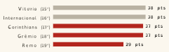
Qua 18: Coritiba × Santos (19h30) · Remo × Chapecoense (20h) · Cruzeiro × Palmeiras e Fla × Athletico-PR (20h30) · Corinthians × Botafogo e Grêmio × Bahia (21h30). Qui 19: Vasco × Inter e Vitória × Bragantino (19h30) · São Paulo × Fluminense (21h30).
Sáb 21: Atlético-MG × Boca Juniors, Sul-Americana, em Barranquilla. Sáb 28, 17h: Palmeiras × Estudiantes, Libertadores, no Centenário, em Montevidéu. O Estudiantes eliminou o Flamengo nos pênaltis.
12 pontos ainda em jogo para cada clube. Para o Remo, 8 de diferença para fora do Z4: na prática, precisa vencer quase tudo e torcer.
Fortaleza. Na volta do técnico Juan Pablo Vojvoda, o Leão bateu o Vila Nova por 1 a 0 no sábado (14), chegou a 65 pontos e passou o Criciúma, que ficou com 62. O playoff tem ida em 21/11, no Heriberto Hülse, e volta em 28/11, no Castelão. Não há pênaltis: o pior colocado precisa vencer o confronto.
Ceará. O Vovô empatou por 1 a 1 com o CRB, no Rei Pelé, e garantiu a permanência na Série B de 2027, evitando uma queda inédita para a Série C. O resultado tirou o CRB do G6; o Atlético-GO ficou com a última vaga e pega o Vila Nova.
Campeão e rebaixados. O Novorizontino venceu o Criciúma fora, por 1 a 0, e ganhou o primeiro título da Série B, com 73 pontos. O Juventude, com 71, também sobe. Caem Ponte Preta, América-MG, Londrina e Avaí.
Nordeste na elite. O Bahia é o 6º da Série A, com 53 pontos, na briga por vaga continental. O Vitória é o 15º, com 38, um ponto acima do Z4. Na Série B, o Sport goleou o Goiás por 3 a 0 na despedida.
Sobral. A Taça Fares Lopes, que dá ao campeão uma vaga na Copa do Brasil de 2027, tem nove clubes; Ceará e Fortaleza jogam com a base. O Vila Real, de Sobral, venceu o Atlético-CE por 2 a 0 e o Ceará por 2 a 1, no Junco, em 9/11, e lidera o Grupo B com 6 pontos. O Guarany não disputa a edição deste ano.
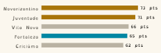
| Sáb 21 | Criciúma × Fortaleza |
| Atlético-GO × Vila Nova | |
| Sáb 28 | Fortaleza × Criciúma, no Castelão |
| Vila Nova × Atlético-GO |
Horários ainda não divulgados. Transmissão prevista: Disney.
Cearense: Fortaleza, nos pênaltis sobre o Ceará. Copa do Nordeste: Vitória, na final contra o Fortaleza. Série D: o ASA, de Alagoas, foi vice do Uberlândia.
O Norde Vôlei, de Fortaleza, campeão da Superliga B, é o único nordestino na Superliga Masculina e ainda buscava a primeira vitória em 9/11, quando recebeu o Sada Cruzeiro.
Perdeu para o Corinthians no CFO em 9/11 e seguia sem vitória após seis jogos no NBB. Placar: 75 a 68, segundo O Povo; 76 a 68, segundo o Diário do Nordeste.
O Junco, ou Estádio Plácido Aderaldo Castelo, tem capacidade para cerca de 15 mil pessoas. Guarany e Vila Real já fazem um clássico local nas divisões de acesso.
F1. Las Vegas corre de quinta a domingo, à noite, num circuito de rua de 6,201 km e 17 curvas. Kimi Antonelli e a Mercedes já são campeões; Verstappen e Russell disputam o vice. Depois vêm Catar, em 29/11, e Abu Dhabi, em 6/12. Em 25/11, a FIA julga em Paris o recurso da Audi sobre Monza: se vencer, Gabriel Bortoleto herda o 10º lugar e 1 ponto.
MotoGP. Marc Márquez chega a Portimão, de 20 a 22/11, com 431 pontos, 60 à frente de Jorge Martín e 74 de Marco Bezzecchi. Basta ampliar em 2 pontos a vantagem sobre Martín, já na sprint de sábado, para levar o 8º título na categoria principal e o 10º mundial da carreira. Bagnaia está fora da etapa. Valência fecha o ano.
Tênis. O ATP Finals começou no domingo (15), em Turim, e vai até 22/11, sem o bicampeão Jannik Sinner, lesionado no joelho. Alexander Zverev é o nº 1 do mundo. Na estreia, Carlos Alcaraz venceu Frances Tiafoe por 6/2 6/2. Os dois primeiros de cada grupo jogam a semifinal no sábado (21).
Continente. Atlético-MG e Boca Juniors decidem a Sul-Americana no sábado (21), em Barranquilla, na Colômbia. Palmeiras e Estudiantes fazem a final da Libertadores em 28/11, às 17h, no Centenário, em Montevidéu, palco do jogo extra da final de 1968 entre os dois.
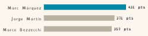
| Qui 19 | TL1 · 21h30 |
| Sex 20 | TL2 · 1h · TL3 · 21h30 |
| Sáb 21 | Classificação · 1h |
| Dom 22 | Corrida · 1h · Globo |
Lendl: Alcaraz, Medvedev, Cobolli e Tiafoe. McEnroe: Zverev, Shelton, Fils e Jódar. Quatro estreantes no torneio.
10: títulos mundiais que Márquez pode somar, contando 125cc e Moto2, se fechar a conta em Portugal.
É a primeira vez desde 2017 que as duas finais continentais têm clubes dos dois países ao mesmo tempo.
Corrida à 1h e plantão às 7h? Veja os melhores momentos depois: sono também é estratégia de prova.
Copa do Brasil. As Meninas da Gávea precisavam de três gols no Beira-Rio. O Inter venceu por 1 a 0 no domingo e fechou o agregado em 4 a 1. O público foi de 20.097 pagantes e a renda, R$ 298.640. A campeã leva R$ 1,74 milhão e enfrenta o São Paulo na Supercopa de 2027. As fontes divergem sobre a autora do gol: Pati Llanos ou Valéria Cantuário.
Libertadores. Em 31/10, em Quito, o Cruzeiro, estreante no torneio, saiu de 0 a 3 para empatar em 4 a 4 com o Corinthians e venceu nos pênaltis por 5 a 4. O título vale US$ 2 milhões e vagas na Copa das Campeãs de 2027 e no primeiro Mundial de Clubes Feminino, previsto para 2028. O Corinthians, maior campeão, buscava o quarto título seguido.
Brasileirão. Na Série A1, o São Paulo foi campeão ao vencer o Corinthians na final.
Tênis. Mirra Andreeva bateu Elina Svitolina por 7/5 6/3, no domingo (15), em Indian Wells. O WTA Finals saiu de Riad por questões de segurança ligadas à guerra envolvendo o Irã. É a campeã mais jovem desde Maria Sharapova, em 2004. Nas duplas, venceram Siniakova e Townsend. Elena Rybakina termina o ano como nº 1.
Quadras. Na Superliga Feminina 2026/27, o Sesc RJ Flamengo confirmou a liderança em 31/10, ao vencer o Mackenzie. No NBB, Minas e Unifacisa lideravam em 7/11.
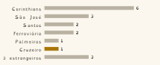
| Ida | FLA 1 × 3 INT |
| Volta · 15/11 | INT 1 × 0 FLA |
| Agregado | 4 × 1 · Inter campeão |
O contrato de três anos com Riad foi encerrado seis meses antes do previsto, e o torneio voltou aos Estados Unidos.
O placar e o título são certos; a autoria do gol, não. O jornal publica as duas versões até a súmula esclarecer.
8 gols na final da Libertadores antes dos pênaltis: 4 a 4, depois de o Corinthians abrir 3 a 0.
Assistir juntos a uma final feminina mostra, sem sermão, que esporte é de todo mundo.
GTA VI. Sai à meia-noite local de 19/11, só para PS5 e Xbox Series, por US$ 79,99 nos EUA. O pré-download, de até 212 GB, está aberto desde 10/11. A edição física é um código na caixa, sem disco. Não há versão para PC no lançamento.
Arecibo, 52. Em 16/11/1974, o radiotelescópio de Porto Rico transmitiu por cerca de 3 minutos uma mensagem de 1.679 bits rumo ao aglomerado M13, a uns 25 mil anos-luz. O número é o produto de dois primos, 23 × 73: quem montar a grade certa vê números, DNA, uma figura humana e o próprio telescópio. Frank Drake desenhou a mensagem com Carl Sagan e outros. O telescópio desabou em 2020.
Artemis 1, 4. Em 16/11/2022, a NASA lançou a cápsula Orion, sem tripulação, numa volta ao redor da Lua.
Venera 3, 61. A sonda soviética lançada em 1965 foi o primeiro objeto humano a atingir outro planeta.
| Ter 17 | Balanço da Nvidia |
| Qui 19 | GTA VI · Shenzhen |
| Dom 22 | F1 em Las Vegas |
| Sex 27 | Black Friday |
Mundo aberto não tem "fim de fase": o cérebro não recebe o sinal de parar. Defina antes o ponto de saída, como "três missões" ou "até 23h".
Semiprimo: número que é produto de dois primos. Arecibo usou 1.679 para que só existisse uma grade possível além da trivial.
A mensagem viajou 52 anos-luz até hoje: cerca de 0,2% do caminho até o M13.
Ranking semestral pelo teste Linpack. O líder de junho, o LineShine, não usa GPU; ainda assim, chips Nvidia estão em 81% das 500 máquinas.
São 25 mil anos de ida e outros 25 mil de volta. Arecibo foi mais demonstração de tecnologia do que conversa.
Niagara. São quatro versões. A Evolution manual tem tabela de R$ 154.990 e sai por R$ 139.990 no lançamento; a Evolution automática, R$ 164.990 por R$ 149.990; a Iconic, R$ 194.990 por R$ 184.990. A Outsider 4x4 custa R$ 209.990. O motor é 1.3 turbo flex de até 160 cv, com câmbio automatizado de dupla embreagem de 6 marchas, e a garantia é de 8 anos ou 160 mil km. Uma versão híbrida com tração integral vem em 2027.
Atenção. Na semana passada, a Autos Segredos relatou que o primeiro lote se esgotou em menos de 24 horas. Antes de reservar, pergunte na concessionária se ainda há preço de lançamento.
A rival. A Fiat Toro flex vai de R$ 167.490 a R$ 206.490 na tabela.
Entrada. Em novembro, o Fiat Mobi segue como o zero mais barato, a R$ 72.490, seguido por Citroën C3 e Renault Kwid. A Caoa Chery registrou o Tiggo 5X 2027, que deve chegar entre fevereiro e março, com preço estimado de R$ 129.990.
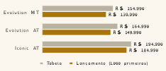
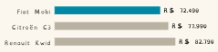
Pneus, inclusive o estepe, calibrados a frio.
Óleo, água, freio e luzes conferidos na véspera.
Saia descansado: depois do plantão, durma antes da estrada.
| Sinal | O que costuma ser | O que fazer |
|---|---|---|
| "De R$ 2.000 por R$ 1.000" | "Metade do dobro": preço inflado antes da data. | Confira o histórico de 90 dias. |
| Só Pix ou boleto | Loja que não aceita cartão nem intermediador. | Desista ou pague com cartão virtual. |
| Cobrança em outro nome | Pix para pessoa física ou empresa diferente da loja. | Pare antes de pagar. |
| Endereço estranho | Site espelhado com hífen ou letra trocada. | Entre pelo app ou digitando o endereço. |
| Muito abaixo de todos | Isca para dados de cartão. | Compare em dois sites oficiais. |
72 h Campanhas anunciadas no início do mês; confira no app oficial.
CNPJ no rodapé, endereço físico, canal de atendimento e reputação em site de reclamações. Na dúvida, compre pelo app.
Um cartão virtual por compra, apagado depois. Se o número vazar, o prejuízo fica limitado àquela compra.
Bloqueie o cartão pelo app, avise o banco na hora, peça a devolução do Pix pelo mecanismo do Banco Central e registre boletim de ocorrência.
Compare o preço final, com frete e prazo. Desconto que some no frete não é desconto.
Print do anúncio, nota fiscal e conversa com a loja. É sua prova se o produto não chegar.
| Item | Veredito | Por quê |
|---|---|---|
| GTA VI (US$ 79,99 nos EUA) | ⏳ Só em loja oficial | Não existe chave barata legítima antes do lançamento. Com plantão no dia 19 ou 20, jogue na folga. |
| Renault Niagara na pré-venda | 🔴 Não hoje | O preço de lançamento pode ter acabado no 1º lote. Espere preço por escrito, test-drive e três cotações de seguro. |
| "Ações da Anthropic" por mensagem | 🔴 Golpe | Não há oferta ao varejo brasileiro; a ação só existirá na Nasdaq a partir da estreia prevista (19/11). Isto não é recomendação. |
| "50% off" sem histórico | ⏳ Checar 90 dias | Pode ser a "metade do dobro". Sem preço de referência, não há desconto. |
| Celular "preço de Black" antes do dia 27 | ⏳ Esperar a data | Anote o preço hoje e compare em 27/11 em dois sites oficiais. |
1ª parcela até 30/11, 2ª até 20/12. Ordem segura: dívida cara, reserva, e só depois a compra da lista.
Atualização de segurança fecha brecha usada em golpe. Ative a instalação automática no celular e no computador.
Anote hoje o preço do que você quer. Sem isso, não existe "desconto" em 27/11.
Lançamento raramente baixa no mesmo mês. A pressa costuma ser o preço.
Compra pela internet tem 7 dias para arrependimento (CDC, art. 49).
De onde vem. O site Bastter.com reúne há anos investidores pessoas físicas em torno de um método de acumulação de longo prazo. Seu criador, Maurício Bastter, trabalhou como médico antes de se dedicar a investimentos, segundo perfil publicado pelo site Pagamentum.
Os pilares. O Pequeno Manual do site abre com a premissa: "Patrimônio não se gira, patrimônio se acumula." A segunda é que a renda do trabalho é a única renda verdadeira; por isso o foco é trabalhar bem e aportar todo mês. A terceira: renda fixa não produz renda, apenas tenta proteger o poder de compra. Gastar os juros corrói o principal.
Sem adivinhação. O manual manda esquecer a hora certa de entrar ou sair. A pessoa define um percentual de renda fixa no patrimônio, deixa quieto e aporta quando o sistema de balanceamento indicar. Também desaconselha títulos com juros semestrais, que antecipam o Imposto de Renda e deixam menos patrimônio no fim.
O que fica de fora. A filosofia Bastter inclui ações compradas para o longo prazo, em carteira diversificada. Este jornal não trata desse tema: quem quiser conhecê-lo deve ler a fonte original e conversar com um profissional certificado.
Os números de hoje. Em 4/11, o Copom manteve a Selic em 13,75%, por unanimidade, e interrompeu cinco cortes seguidos. A poupança rende 0,5% ao mês mais TR enquanto a Selic estiver acima de 8,5%. O IR da renda fixa segue regressivo em 2026, porque a MP 1.303 perdeu a validade: 22,5% até 180 dias, 20% até 360, 17,5% até 720 e 15% depois disso.
Tesouro Reserva. Lançado em 11/5/2026, rende 100% da Selic, aceita a partir de R$ 1, funciona 24 horas, inclusive nos fins de semana, e não tem marcação a mercado. Segue o IR regressivo e paga IOF se resgatado antes de 30 dias.
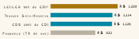
| FGC | Poupança, CDB, LCI, LCA: até R$ 250 mil por CPF por instituição ou conglomerado; teto de R$ 1 milhão a cada 4 anos. |
| Tesouro | Títulos públicos: garantia do Tesouro Nacional, não do FGC. |
| Carência | LCI e LCA sem IPCA: 6 meses. Com IPCA: 36 meses (LCI) e 12 (LCA). |
Trabalhe, gaste menos do que ganha, aporte sempre, não tente adivinhar o mercado e deixe o tempo trabalhar.
1. Reserva de emergência com liquidez diária. 2. Objetivo com data: título que vence perto dela. 3. Longo prazo: percentual fixo, sem girar.
Com a inflação projetada pelo Copom em 5,6% para 2026, um ganho bruto de 13,75% vira cerca de 11% depois do IR e algo perto de 5% acima da inflação.
Ofereceram uma aplicação "imperdível"? Espere três dias, leia o contrato e consulte alguém de confiança. Quem tem pressa é quem vende.
Terreno. No Brasil, a propriedade se transfere com o registro do título no Cartório de Registro de Imóveis (Código Civil, art. 1.245): quem não registra não é dono. Antes de pagar, peça a matrícula atualizada, com ônus, e certidões do vendedor. É proibido vender lote de loteamento não registrado (Lei 6.766/1979, art. 37). Na zona rural, confira CCIR, ITR e o Cadastro Ambiental Rural.
Imóvel. Some ITBI, cuja alíquota é municipal, escritura, obrigatória acima de 30 salários mínimos (Código Civil, art. 108), registro, IPTU, condomínio, manutenção e meses sem inquilino. Vender pode levar meses. A filosofia Bastter alerta para não comparar aluguel com renda fixa como se fossem a mesma coisa.
Veículo. Carro é, quase sempre, consumo: perde valor com o tempo e cobra seguro, IPVA, manutenção e combustível. Mesmo o que gera renda precisa entrar na conta com a depreciação. No usado, consulte débitos, recall e laudo cautelar; transfira no Detran em até 30 dias e, se vender, comunique a venda.
Revenda. Comprar para revender com lucro é comércio: formalize. Em 2026, o MEI pode faturar até R$ 81 mil; a Lei Complementar 238/2026 eleva o teto para R$ 110 mil em 2027 e R$ 140 mil a partir de 2028, condicionado ao orçamento. Emita nota e guarde comprovantes. O comprador tem 30 dias para reclamar de defeito em bem não durável e 90 dias em durável (CDC, art. 26). Preço muito abaixo do mercado é alerta: comprar produto de crime é receptação (Código Penal, art. 180), inclusive sem intenção.
Golpes de novembro. O FGC detectou em 26/10 acesso indevido a nome, CPF, e-mail, data de nascimento e registros de garantias pagas. O fundo não usa WhatsApp nem SMS, não tem intermediários e nunca cobra taxa nem pede senha. Dinheiro esquecido só se consulta no site do Banco Central, de graça. E nenhum banco liga pedindo Pix: o mecanismo oficial de devolução recupera só cerca de 9% do valor roubado, segundo o NSC Total.
Registrato (BC): contas e empréstimos no seu CPF. BC Protege+: bloqueia abertura de contas em seu nome, via gov.br prata ou ouro. Cadastro da CVM: confere se empresa ou profissional é autorizado. Consumidor.gov.br: reclamações.
Urgência, escassez, autoridade, prova social, favor e afeto. Antídoto: 72 horas e uma pessoa de confiança antes de qualquer Pix.
Matrícula com ônus · certidões do vendedor · IPTU ou ITR em dia · zoneamento na prefeitura · visita com vizinhos e limites · nada de "contrato de gaveta".
Débitos e multas · recall · laudo cautelar · preço da tabela Fipe · pagamento só com documento em mãos · transferência no Detran.
O jornal não é advogado nem consultor. Em compra relevante: advogado, contador, corretor com Creci e, para investimentos, planejador certificado.
O Copom manteve a Selic em 13,75% em 4/11, por unanimidade, depois de cinco cortes. A poupança só muda de regra com a Selic em 8,5% ou menos (Lei 12.703/2012).
O teto do MEI está em R$ 81 mil desde 2018. A LC 238/2026 prevê R$ 110 mil em 2027 e R$ 140 mil em 2028, se houver previsão orçamentária.
A tensão no Golfo mexe com petróleo e mercados (pág. 5). Na vida real, taquicardia pede avaliação médica, não manchete.
Flamengo 76 × Palmeiras 73, com 12 pontos em jogo; o Palmeiras ainda decide a Libertadores em 28/11. O Fortaleza joga por dois resultados iguais e o Ceará ficou na Série B (pág. 13).
O Gepeto é o mascote do Agente Editorial 360. Ele não tem opinião política e cita as fontes, como manda o expediente.
O milagre. A Legenda Áurea, reunida no século XIII pelo arcebispo de Gênova Jacopo de Varazze, conta que Cosme e Damião, irmãos médicos martirizados por volta do ano 300 sob Diocleciano, apareceram em sonho a um sacristão com a perna doente. Amputaram-na e puseram no lugar a perna de um homem etíope recém-sepultado. Ao acordar, ele tinha uma perna de outra cor. A cena virou tema de pintura no fim da Idade Média.
Os anárgiros. A tradição chama os dois de "anárgiros", os que curavam sem cobrar. São padroeiros de médicos, cirurgiões e farmacêuticos. No Brasil, a festa de 27 de setembro une o catolicismo popular e as religiões de matriz africana, que os associam aos Ibejis e aos Erês, com doces para as crianças.
O que a lenda pula. A rejeição. Em 1953, Billingham, Brent e Medawar mostraram que camundongos expostos ainda no útero a células de outro animal passavam a aceitar enxertos dele: a tolerância imunológica adquirida, Nobel de 1960 com Macfarlane Burnet. Medawar começara estudando enxertos de pele em queimados da Segunda Guerra.
O primeiro rim. Em 23/12/1954, em Boston, Joseph Murray transplantou um rim entre gêmeos idênticos, que dispensam a imunossupressão; ganhou o Nobel em 1990. No Brasil, o 1º transplante foi renal, em 16/4/1964, no Hospital dos Servidores do Estado, no Rio: um jovem de 18 anos recebeu o rim de um bebê de 9 meses. Em 2025, o país fez 31 mil transplantes, recorde, com cerca de 86% pagos pelo SUS.
| Ideia | Hoje |
|---|---|
| Gêmeos idênticos dispensam imunossupressão | ✅ Comprovado |
| Enxerto de outra pessoa "pega" sozinho | 🔴 Rejeição sem remédio |
| Transplantar mão ou rosto | ✅ Existe, com remédio por toda a vida |
| Fé ajuda a atravessar o transplante | 🟡 Apoio; não substitui tratamento |
| Biografia dos gêmeos santos | 🟡 Tradição antiga, detalhes lendários |
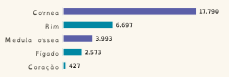
A molécula. Em 16/11/1938, o químico Albert Hofmann sintetizou na Sandoz, em Basileia, a dietilamida do ácido lisérgico, derivada do fungo do centeio, em busca de um estimulante da circulação e da respiração. Não viu utilidade e guardou a substância. Em abril de 1943, voltou a ela e descobriu o efeito por acidente.
O programa. Em 1953, a CIA aprovou o MKUltra, chefiado pelo químico Sidney Gottlieb, para testar drogas, sobretudo LSD, hipnose e privação sensorial em interrogatórios. Foram mais de 150 subprojetos em cerca de 80 instituições, entre universidades, hospitais, prisões e farmacêuticas, muitas vezes por meio de fachadas e com pessoas que não sabiam ser cobaias, nos EUA e no Canadá. O medo de fundo era a "lavagem cerebral" atribuída aos rivais da Guerra Fria.
O apagão. O programa foi encerrado em 1973, quando o diretor Richard Helms mandou destruir os arquivos. Veio a público em 1975, com a Comissão Church, do Senado, e uma comissão presidencial. Em 1977, um pedido de acesso à informação achou cerca de 20 mil documentos que escaparam. Nenhuma técnica confiável de controle da mente saiu dali.
Hoje. Em 9/11, a Compass Pathways concluiu nos EUA o primeiro pedido de registro de um remédio de psilocibina, para depressão resistente, com voucher de prioridade da FDA. A aprovação não está garantida, e a substância ainda precisa ser reclassificada.
O Código de Nuremberg, de 1947, já exigia consentimento voluntário seis anos antes do MKUltra. Um Estado que vigia inimigos pode violar os próprios cidadãos; por isso a pesquisa precisa de comitê de ética e de arquivos que não se apagam.
| 16/11 | Tolerância · Dislexia |
| 17/11 | Dia da Prematuridade |
| 18–24/11 | Semana dos antimicrobianos |
| 20/11 | Consciência Negra |
Em 16/11/1995, os países da UNESCO, que nasceu no mesmo dia em 1945, aprovaram a Declaração de Princípios sobre a Tolerância. A ONU proclamou a data no ano seguinte.
Psicodélico: termo criado em 1957 pelo psiquiatra Humphry Osmond, do grego "mente" + "tornar visível". Tolerância: do latim tolerare, "suportar".
1. Em que cidade Hofmann sintetizou o LSD? 2. Em que ano o MKUltra foi encerrado? 3. Quem dividiu o Nobel de 1960 pela tolerância imunológica? Respostas: Basileia · 1973 · Medawar e Burnet.
✝️ Bíblia · Provérbios 22:1 e Romanos 12:10
"Mais vale o bom nome do que muitas riquezas." · "Na honra, tomem a dianteira uns dos outros."
Reflexão: o nome se constrói em anos e se perde num dia. Honrar primeiro é dar ao outro o lugar que você queria para si. Hoje: elogie em público e corrija em particular.
✡️ Torá · Êxodo 20:12 e Levítico 19:32
"Honra teu pai e tua mãe." · "Diante dos cabelos brancos, levanta-te."
Reflexão: é o 4º mandamento na contagem católica e o 5º na judaica e na protestante, e o primeiro que traz promessa: vida longa (Dt 5:16; Ef 6:2). Hoje: ligue para alguém mais velho que te ensinou algo.
📜 Talmude · Mishná, Pirkei Avot 4:1 (Ben Zomá)
"Quem é honrado? Quem honra as criaturas. Quem é forte? Quem domina o próprio impulso."
Reflexão: honra não se cobra, se pratica. E força, aqui, é autocontrole, a virtude mais difícil para quem tem TDAH e a que mais rende. Hoje: antes de responder com raiva, escreva a resposta e espere dez minutos.
☪️ Alcorão · Suratas 17:70 e 49:13
"Honramos os filhos de Adão." · "O mais nobre de vós, diante de Deus, é o mais piedoso."
Reflexão: a honra é dada a todo ser humano, e a nobreza se mede pela conduta, não pela origem; povos e tribos existem "para que vos conheçais". Hoje: trate quem te serve como trataria uma autoridade.
☯️ Confúcio · Analectos 2:7 e 4:17
"Até cães e cavalos recebem sustento; sem reverência, onde está a diferença?" · "Diante de quem tem valor, pense em igualá-lo; diante de quem não tem, examine a si mesmo."
Reflexão: sustentar os pais não basta: falta o respeito. E o mau exemplo do outro é espelho para revisar o próprio. Hoje: escolha alguém admirável e copie um hábito dele por uma semana.
☸️ Budismo · Dhammapada 5 e 103
"O ódio não cessa pelo ódio; cessa pelo não ódio." · "Maior que vencer mil homens mil vezes é vencer a si mesmo."
Reflexão: honra, para o Buda, é a mente que não revida e que se governa. Hoje: uma resposta calma a quem provocar. A vitória é sua.
| Ideia | Onde aparece |
|---|---|
| Honrar pais e mais velhos | Torá, Bíblia, Alcorão 17:23, Confúcio, Upanishads |
| Honrar todo ser humano | Talmude, Alcorão 17:70, Romanos, budismo |
| Dominar o próprio impulso | Pirkei Avot, Dhammapada, Tao Te Ching |
| Bom nome acima do lucro | Provérbios 22:1, Analectos 4:16 |
A quem você deve honra e ainda não agradeceu? Escreva o nome. Se puder, mande a mensagem antes do almoço.
Do latim honor, o reconhecimento público do valor de alguém. Em hebraico, kavod vem da raiz de "peso": honrar é dar peso ao outro.
| Tradição | A regra de ouro (tradução livre) | Fonte |
|---|---|---|
| Judaísmo | "O que é odioso para ti, não faças ao teu próximo. O resto é comentário: vai e aprende." | Hillel, Talmude, Shabat 31a |
| Cristianismo | "Tudo o que quereis que os outros vos façam, fazei-o também a eles." | Mateus 7:12 |
| Islã | "Nenhum de vós crê de fato até desejar ao irmão o que deseja para si." | Hadith 13 de Nawawi (Bukhari e Muslim) |
| Confucionismo | "O que não desejas para ti, não faças aos outros." | Analectos 15:24 |
| Budismo | "Pondo-se no lugar do outro, não mate nem faça matar." | Dhammapada 129 |
"Seja o vosso sim, sim, e o vosso não, não" (Mt 5:37). "Cumpri o compromisso: ele será cobrado" (Alcorão 17:34). "Não sei como pode valer um homem sem palavra" (Analectos 2:22).
Com TDAH: só prometa o que cabe na agenda, anote na hora e, se não der, avise antes do prazo.
Êxodo pede honra aos pais; Efésios 6:4 pede aos pais que não provoquem os filhos à ira. O Sigalovada Sutta, do budismo, lista deveres de pais para filhos e de filhos para pais. Kardec dedica o capítulo XIV de O Evangelho segundo o Espiritismo ao tema. Filho aprende honra vendo como você trata os seus pais.
Honra não justifica violência. A tese da "legítima defesa da honra", usada por décadas para absolver quem matou mulheres, foi declarada inconstitucional pelo STF, por unanimidade, em 1º/8/2023 (ADPF 779). Honra verdadeira protege; nunca fere.
Confúcio se examinava três vezes ao dia (Analectos 1:4). Antes de dormir: 1. Quem eu honrei hoje? 2. Que palavra eu cumpri? 3. Onde perdi o controle, e o que faço diferente amanhã?
🧠 Recuperação ativa: 1. Em que tratado está "Quem é honrado? Quem honra as criaturas"? 2. Que surata diz "Honramos os filhos de Adão"? 3. Qual sábio resumiu a Torá "num pé só"? Respostas: Pirkei Avot 4:1 · 17:70 · Hillel.
Ordem. Num estudo com 30 casais, as mulheres que descreviam a casa com palavras de bagunça e tarefas por terminar tinham o cortisol caindo menos ao longo do dia, padrão ligado a estresse. Benjamin Franklin pôs a Ordem na sua lista de 13 virtudes: cada coisa no seu lugar, cada parte do trabalho no seu tempo. O Eclesiastes já dizia que tudo tem o seu tempo, e Provérbios 6:6 manda observar a formiga.
Gratidão. Quem anotou motivos de gratidão toda semana, por 10 semanas, relatou mais otimismo, mais exercício e menos queixas físicas do que quem anotou aborrecimentos. Escrever e entregar uma carta de agradecimento elevou a felicidade por cerca de um mês. Marco Aurélio abre as Meditações com uma lista de gratidão: do avô, o bom caráter e o controle do temperamento; da mãe, a generosidade e a vida simples.
Caráter. Nise da Silveira recusou eletrochoque e lobotomia e tratou pacientes psiquiátricos com arte; criou o Museu de Imagens do Inconsciente em 1952. Vital Brazil desenvolveu o soro antiofídico e fundou o Butantan. Zilda Arns, pediatra, criou a Pastoral da Criança em 1983 e levou soro caseiro e balança às comunidades. Irmã Dulce virou Santa Dulce dos Pobres em 2019.
| Gratidão escrita melhora o humor | ✅ |
| Luz do sol de manhã ajusta o sono | ✅ |
| Casa em ordem, menos estresse | 🟡 |
| Mesa limpa "atrai prosperidade" | ✨ |
| Cristais "limpam energias" | ✨ |
Estou com fome, raiva, solidão ou cansaço? Com dois deles, adie a conversa. Ferramenta prática usada em grupos de apoio, sem estudo de eficácia.
Ouvir sem interromper é honra ao outro. Anote a ideia num papel e espere a vez de falar: ela não se perde.
Leitura cultural e simbólica: num teste duplo-cego publicado na Nature em 1985, astrólogos não acertaram perfis acima do acaso. Use como lembrete de atitude, nunca como decisão.
Sol nos primeiros 30 minutos ✅, mesa com uma tarefa só 🟡, uma planta à vista e cores sóbrias, como azul e verde ✨. Para ele e para ela: roupa limpa e passada, perfume discreto, cabelo e unhas cuidados. Elegância é discrição.
| Planta | Tradição ✨ | O que se sabe |
|---|---|---|
| Espada-de-são-jorge | Proteção, coragem | Resiste à seca; pouco tóxica a pets |
| Alecrim | Alegria, memória | Aroma: evidência fraca |
| Lavanda | Calma | Aroma relaxa pouco |
| Comigo-ninguém-pode | Guarda do lar | ⚠️ Muito tóxica: longe de crianças e pets |
Vasos não purificam o ar de forma relevante; fazem bem ao humor e à rotina de cuidado.
Em Ajustes › Acessibilidade › Conteúdo Falado, ative "Falar Tela". Depois, deslize dois dedos do topo para baixo e o iPhone lê a página.
No Edge, F9 abre a Leitura Avançada: lê em voz alta e deixa trocar fonte, espaçamento e cor de fundo.
Antes de tocar num link de promoção, segure o dedo sobre ele e leia o domínio até o fim. Hífen ou letra trocada é sinal de golpe.
As regras de acessibilidade WCAG pedem que o texto aguente espaçamento de linha de 1,5 sem quebrar. Ajuda disléxicos e quem tem TDAH.
A IA reescreve um tema em frases curtas; você revisa, cita as fontes e vende como guia para pais e escolas, sem prometer tratamento.
Escreva só três tarefas para hoje. O resto vai para uma lista "depois", que você só abre na sexta.
Choque que não responde: noradrenalina cedo, vasopressina antes de doses altas, hidrocortisona e lembrar da adrenal. Fora da UTI, semana de muita notícia e nenhuma decisão por impulso.
Hoje, em 5 minutos, calcule a complacência estática de um paciente ventilado: VC ÷ (platô − PEEP).
Esperar acesso central para a noradrenalina · dopamina de rotina · esperar o cortisol na crise adrenal · chamar flutter 2:1 de sinusal · reservar carro sem preço por escrito · pagar "taxa" para liberar dinheiro.
Jornal Diário 360 · Radar 360 Circunstancial · Ano I, nº 011 · fechamento em 16/11/2026, no início da manhã, antes do Focus e do IBC-Br. Produzido pelo Agente Editorial 360 com o Claude (Anthropic). Atualizações na p.2. Nesta edição de 30 páginas: esportes ampliados (p.12–15), educação financeira sem renda variável (p.20–21), tirinhas com personagens próprios (p.22–23), Arcanos (p.24–25), Honra 360 e Equilíbrio 360 (p.26–29), com traduções livres e referências para conferir. Em saúde, siga o protocolo institucional; em finanças e compras, não há recomendação nem comissão. Gráficos e ilustrações originais; nenhuma foto de terceiros. Texto em OpenDyslexic, fonte livre pensada para leitura com dislexia.